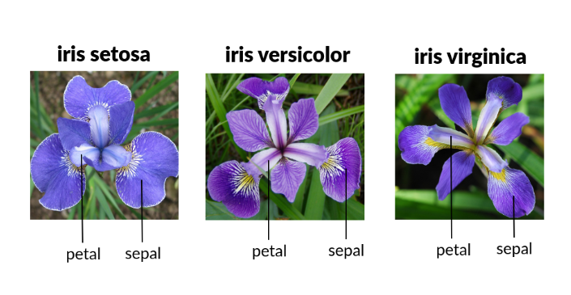
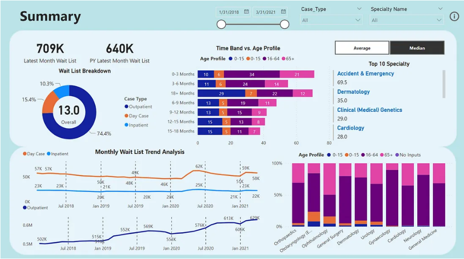
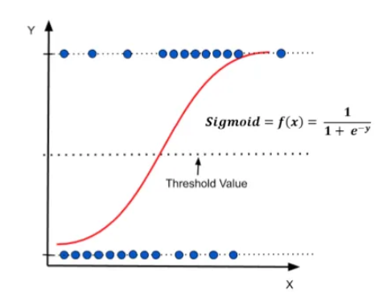

This project presents a Monitoring and Evaluation (M&E) analysis of a community based Real Time Feedback Mechanism (RTFM) implemented within an urban humanitarian food security program in Nairobi, Kenya.
The analysis demonstrates how feedback systems enhance Accountability to Affected Populations (AAP), program quality, and adaptive learning. All data used are simulated to reflect real humanitarian MEAL systems while maintaining ethical and data protection standards.
.

This is a machine learning project in python that has involved the use of Iris Dataset

This project entails creation of an interactive Dashboard of HR data using Tableau.

This project entails predicting credit risk using logistics regression method.

This project entails forecasting a time series dataset in R studio.

This project focuses on technical analysis, visualization, and prediction of global stock markets, specifically targeting major technology stocks like Apple (AAPL), Google (GOOGL), Amazon (AMZN), and Microsoft (MSFT). Using data retrieved from Yahoo Finance, the project explores historical stock performance, evaluates risk, and employs predictive techniques such as the Monte Carlo simulation!

This section contains all my professional certifications.